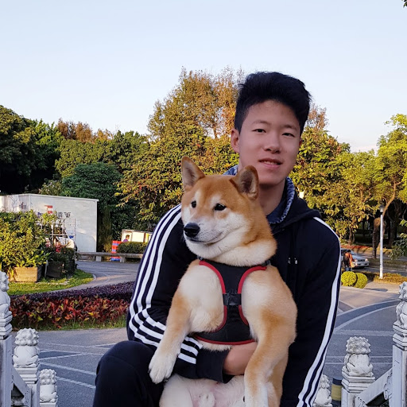

- My name is Ethan Chen. I am currently a senior at PAS. I am outgoing and make friends everywhere I go.
- I have a variety of interests, from sports to music to animals. I like to play basketball and volleyball, and I am currently in the basketball team and I am the captain of volleyball club. I pursue for body fitness, and I like to work out to build up my muscles. I like biking, and I have cycled around Taiwan in June 2017. I also have a strong passion in music. I have played the violin for 11 years, and I am currently the concert master of my school's orchestra. I play classical, jazz, tango, and modern music. I love animals, and I enjoy going to the wilderness to find animals. My animal hobbies include whale watching and birdwatching, and I do animal photography. If you are intersted in the pictures I take, you can go to the photo page.
- I have a cute Shiba Inu. His name is Rex. Rex is currently 5 years old. I find myself so similar to my dog, whether in personality (friendly and outgoing and quite impetuous) or anstronomical and Chinese zodiac sign (Aries and Horse). To check more photos of Rex, click here.